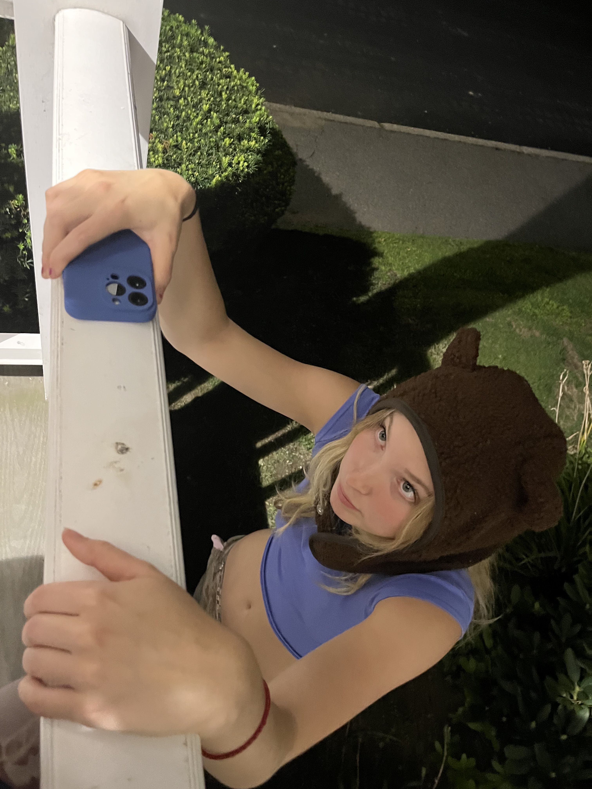

This webpage is going to be about my friend
Nieve.

I met Nieve two years ago, and she has somehow become one of my best friends! She is a very multifacited person who explores all her passions:
music, food, and her sport -- SQUASH!
Together, we eat a lot of food, listen and play a lot of music, and fool around.
SQUASH
Nieve is plays squash for the Tufts D1 Varsity team. Sometimes she is on Tufts marketing pamphlets or advertisements!
Before I met my friend Nieve, I had no idea what squash was, let alone how intense and exciting the sport could be. Nieve's enthusiasm was contagious, and as I watched her matches, I started to appreciate the skill, strategy, and sheer athleticism required to excel in squash. Now, my friends and I eagerly attend her matches, cheering her on with love for the sport. Thanks to Nieve, squash has become not just a game, but a source of shared experiences and unforgettable moments in our friendship.
THE RAGE CAGE
In the fall of 2021, Nieve and I started a radio show for the on campus radio WMFO 91.5 FM Tufts Freeform Radio. Joining the radio with her was an experience that allowed our friendship to grow in unexpected ways. When first starting the show and collaborating on a playlist, it seemed like we had pretty different music tastes. However, unexpectedly, this musical dichotomy allowed our preferences to evolve, and our music knowledge to grow. Our playlists, although chaotic, blended harmoniously and our on-air banter became more seamless. Colloborting and compromising in this environment allowed our friendship to deepenit was evident that our friendship was thriving on this newfound bond. Through the radio, we discovered the beauty of diversity in tastes and how it could enrich our shared moments, creating a lasting connection that went beyond the airwaves.
FOOD
Nieve loves food, especially eating around Boston. This is Nieve's top 3 for food around the area: